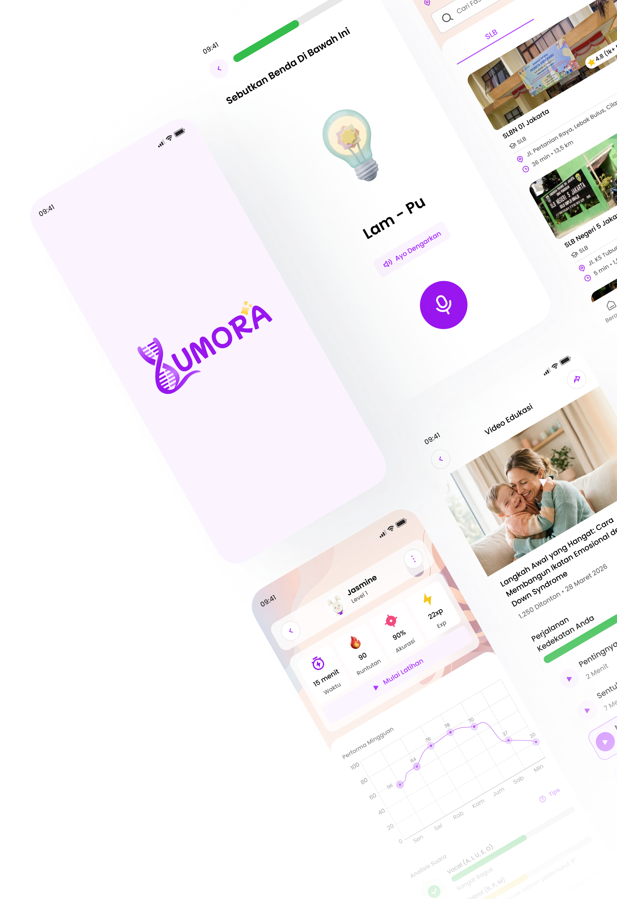
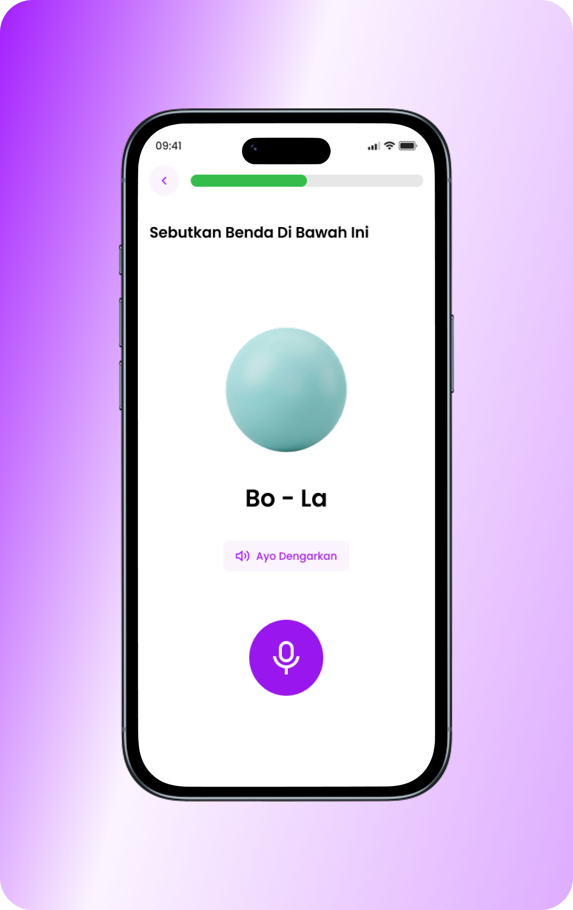
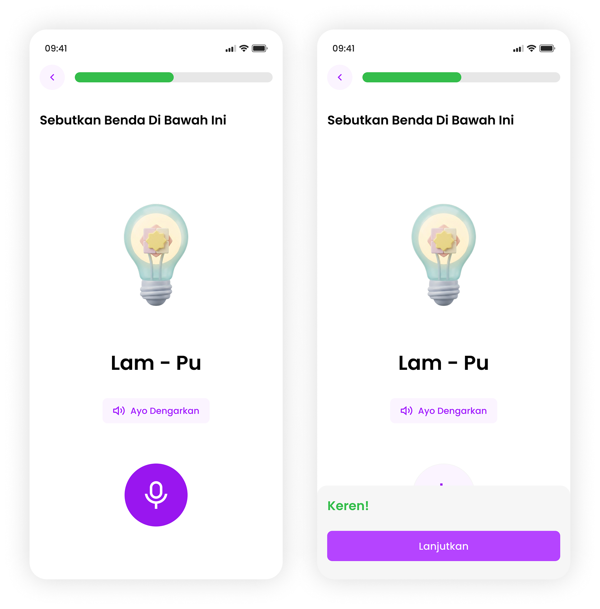
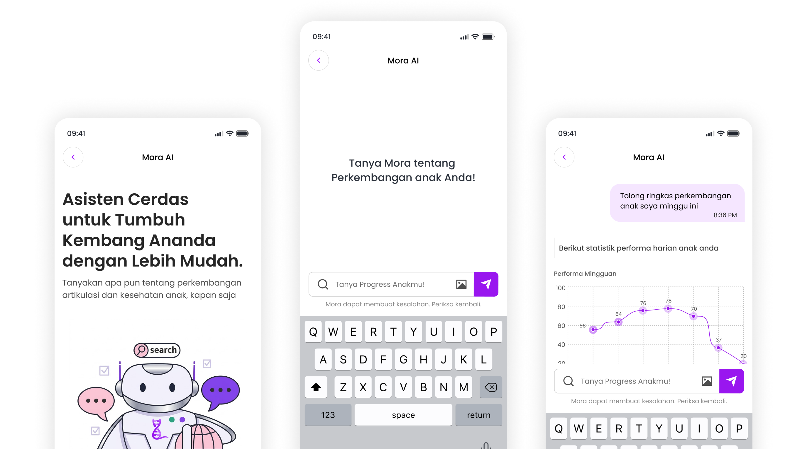
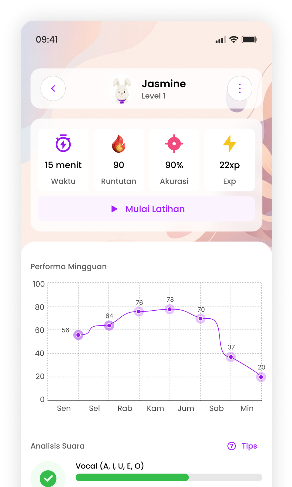
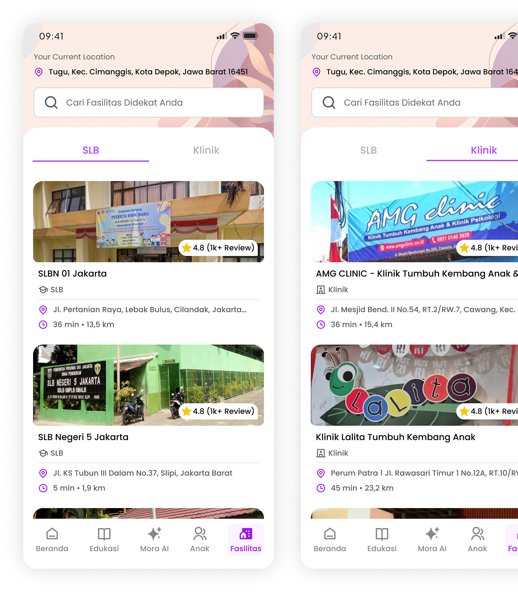

AI-Powered Adaptive Articulation Training for Children with Down Syndrome

What Is Lumora?
Lumora is an AI-powered mobile app that helps children with Down syndrome build verbal communication skills through adaptive articulation training. Using phoneme classification to analyze pronunciation patterns, the app tailors each exercise to a child's individual ability level.
Lumora is also built around parents — serving as an education and monitoring platform so they can understand their child's communication needs and track articulation progress in a structured, data-driven way.
Contribution
UI Design, Design System, and Logo Design
Tools

Problem Statement
Derived from literature review and background research on assistive AI for children with Down syndrome.
Children with Down syndrome face significant challenges in verbal communication and articulation that affect their social interaction and overall development.
Inclusive, adaptive digital platforms tailored to each child's individual training needs remain scarce.
AI-based communication tools show promise, but adoption is still limited by cost, technical support, and a lack of solutions adapted to local context.
Research
Lumora's design followed a Human-Centered Design (HCD) approach through iterative Empathize → Define → Ideate → Prototype → Testing phases, validated with children with Down syndrome as primary users and parents as secondary users, measured with the System Usability Scale (SUS), Single Ease Question (SEQ), and Net Promoter Score (NPS).
User Persona
Zidan is a child with Down syndrome who is currently learning to speak. He has difficulty pronouncing words clearly and needs repeated practice through an engaging visual and audio approach.
- Pronounce words more clearly
- Communicate with people around him
- Learn in an enjoyable way
- Get immediate feedback during practice
- Struggles to imitate pronunciation
- Gets bored quickly with repetitive exercises
- Doesn't understand complex instructions
- Needs a parent's help while learning
- Visual learner
- Easily distracted
- Responsive to sound
- Prefers voice- and image-based interaction
- Uses the device with a parent nearby
Anna is the parent of a child with Down syndrome who wants to support her child's communication development. She actively looks for effective learning methods but struggles to find an approach that's both appropriate and measurable.
- Help her child speak more clearly
- Monitor her child's progress
- Get proper training guidance
- Find an effective therapy solution
- Doesn't know which training methods are effective
- Finds it hard to measure her child's progress
- Lacks a platform that's specialized and adaptive
- Is confused reading her child's progress
- Caring
- Concerned
- Proactive
- Actively monitors her child's development
- Looks for educational information online
Competitor Analysis
Benchmarked against two existing speech-therapy apps to identify where Lumora needed to differentiate.
Solution
User Flow
The core interaction loop is a single training session: the child listens to an audio prompt, repeats the sound, and receives instant AI feedback — with the option to continue with another exercise or return to the dashboard.
Features

Adaptive Articulation Training
The child listens to an audio prompt, repeats the word or sound, and immediately receives AI-driven feedback, with the option to continue practicing until they're ready to move on.

Mora AI
Parents can ask Mora AI questions about their child's Down syndrome-related communication development and receive an instant, supportive answer.

Progress Dashboard
Parents can view development graphs and AI-generated insights that summarize how their child's articulation ability is progressing over time.

Nearby Facility Finder
A simple picker lets parents find and select nearby special-needs schools (SLB) or clinics whenever they need additional professional support.
Reflection
This project reinforced how meaningful design for a specialized audience starts with genuinely simple, repetitive, visually-guided interactions — not simplified versions of standard patterns, but interfaces built from the ground up around how children with Down syndrome actually process information.
Designing Mora AI also taught me where AI should support rather than replace — giving parents insight and encouragement while leaving diagnosis and therapy to the professionals who are trained for it.